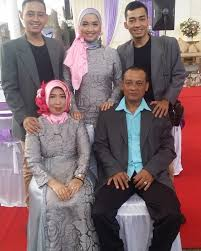
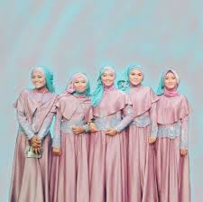

ABOUT ME!
Biodata
Nama : Jihan Suci Rahayu
TTL : Sukabumi, 18 Februari 2002
Agama : Islam
Alamat : Jl. Veteran I K19/18 ,RT 002/003 ,Kecamatan Cikole ,Kelurahan Gunung Parang, Sukabumi, Jawa Barat.
Me and My Family
It's Me
Me and My Friend
Hobi
Jadi sebenernya, akutuh gasuka tatra, cuma dari kecil aku udah di kenalin sama tari tradisional gitu. Makanya karena kebiasaan, jadi nya udah kaya hobi gitu deh.
Karya
Aku dikasih tugas sama sekolah ( SMAKBO ) buat bikin GIF ,atau gambar bergerak melalui aplikasi GIMP. Nah aku ngambil tema ini karena kebiasaan aku yang sering main hp sampe ketiduran, nunggu chat dari doi yang tak kunjung datang. jangankan chat nya yang dateng,orang nya aja belum dikasih petunjuk untuk menemui saya .Eaa . HIDUP JOMBLO!!

Idola
Idola akumah ga muluk-muluk. Jadi awal sejarah aku kagum sama Fandi itu karna akutuh suka nonton vlog nya Ria Ricis gitu kan... trus Ria Ricis sering upload gitu sama Fandi... dan ternyata mereka emang sempet pacaran.Mereka juga pernah cover lagu gitu yang judul nya karna su sayang . Trus darisitu aku mulai kagum ama Fandi. Fandi itu penyanyi dangdut KDI lho gais...